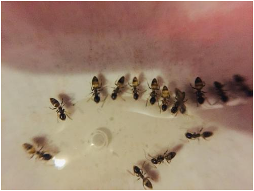
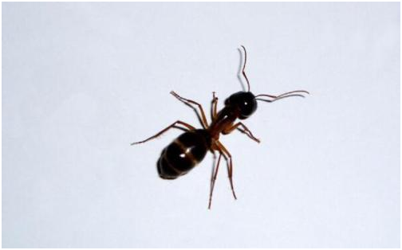
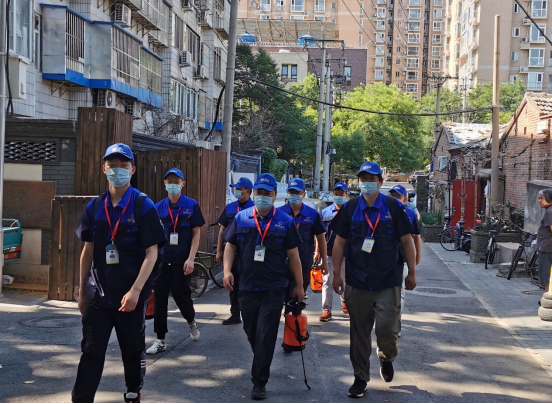

消杀防治蚂蚁
发布时间：2021-07-08 19:29浏览次数：
· 家里发现蚂蚁怎么办？怎么消灭蚂蚁？
蚂蚁是地球上最常见的昆虫，是数量最多的一类昆虫。蚁类的食性在不同种类之间有很大的差别。一般可分为肉食性、植食性和杂食性蚁类。杂食性蚁种占大多数。蚂蚁随时看着不起眼，一旦蚂蚁爬到食物上，就会释放出大量的蚁酸，人食用后易引起胃肠不适；哺乳期的婴幼儿更易招蚂蚁叮咬，被叮咬后，皮下会出现红色斑点，极度瘙痒。今天， 时代卫士专业杀虫公司就跟大家说说，家里发现蚂蚁怎么办？怎么消灭蚂蚁？

蚂蚁(ant)是一种昆虫，属节肢动物门，昆虫纲，膜翅目，蚁科。蚂蚁对温度的反应敏感，多半在炎热天气活动。它们喜欢香甜的食品，如蛋糕、蜂蜜、麦芽糖、红糖、鸡蛋、水果核、肉皮、死昆虫等。它们能辨别道路，行动极为匆忙，如果个别工蚁死亡，尸体会被运回蚁穴。但它们不耐饥饿，在没有食物和水的情况下，经过4昼夜就会有一半死亡。
蚂蚁对温度的反应敏感，多半在炎热天气活动。它们喜欢香甜的食品，如蛋糕、蜂蜜、麦芽糖、红糖、鸡蛋、水果核、肉皮、死昆虫等。它们能辨别道路，行动极为匆忙，如果个别工蚁死亡，尸体会被运回蚁穴。但它们不耐饥饿，在没有食物和水的情况下，经过4昼夜就会有一半死亡。
首先应仔细查找蚂蚁的入室通路，如墙面、地面、天花板上的各种小孔、缝隙，特别是墙角、边缘、管道、瓷砖间列隙、门窗框架等处，即便是芝麻粒大小的空隙，也会成为蚂蚁的通道或隐匿处，用泥灰堵塞、阻断其通路。应当勤查勤堵，使蚂蚁无路可走，无处可藏。同时要保管好食品，尤其是食糖、蜂蜜要加盖保存，不要随意摆放，招致蚂蚁。小黄家蚁触角灵敏，对香甜气味的食品特别敏感，一旦嗅到，即可引来大批蚂蚁摄食，并搬运入巢。
由于蚂蚁的巢穴不容易或不便于确定，除虫公司物理方法防治室内蚂蚁比较困难，只能限于杀灭可以看到的工蚁等，不能断根，一般可用开水烫等方法，还可采用：甜食诱杀，根据蚂蚁喜食甜食的习性，在蚂蚁经常出没的地方，用甜食如蜂蜜、苹果引诱蚂蚁取食，然后用开水泼或用火烧。

蚂蚁是社会性昆虫，喜食甜食，当工蚁发现食物后就马上吞食，并把它储藏在嗉囊内，回到巢穴除少量给自己食用外其余全部吐给幼仪和蚁后，此外工蚁间也进行食物交换，即饱食的蚂蚁将食物反哺给饥饿的蚂蚁，利用蚂蚁的这一生活习性，除虫公司化学防治应以毒饵为主，使蚂蚁将适口性好、驱避作用小的药饵搬入巢中，毒杀蚁后、蚁王和幼蚁，达到全巢覆灭的目的。家里发现蚂蚁怎么办？怎么消灭蚂蚁？
1．湿布揩除：
若发现有一列或多列蚂蚁活动，可用湿布揩去，并放入装有洗衣粉水的盆中将其淹死；
2．洗衣粉水沟阻隔：
由于蚂蚁一进入洗衣粉水便会被淹死，所以此法可用以保护一定的区域；
3．水淹：
即用浇水的方法淹掉蚂蚁巢，比较适合在花盆中营巢的蚂蚁.
4．化学防治：
粉尘：通常采用硅酸（二氧化硅)粉等吸入性粉尘使蚂蚁体内缺水而死亡；

5．硅酸粉虫菊酯粉混合物:
此种方法是上法的改良，可以缩短杀灭的时间，但应避免自己吸入粉麈或将粉尘吸入室中；化学药剂喷雾在蚁巢口周围及蚁路上喷洒化学药剂可直接触进行蚂蚁消杀，此法易造成环境污染和抗性。现多用药剂如下：90%以上敌百虫原液500—1000倍液喷雾；0.1%除虫菊酯煤油溶剂喷雾等。 作为专业的灭蚂蚁公司，时代卫士提醒您，这些方法有较好的效果，见效迅速，但不彻底，不易根绝，且易造成环境污染和抗性。
6．毒饵：
毒饵即是由化学药剂与蚂蚁喜食的食物诱饵混合而成。根据蚂蚁的交哺行为，一只工蚁取食毒饵后，只要其短时间内不死亡，就可将毒饵带入蚁巢，引起其它个体死亡，死亡时间一般在七天之内，但蚂蚁蛹不进食，因此可能存活，使除蚁不彻底。
7．保幼激素类似物毒饵：
即在饵料内配以保幼激素类似物，如抑太保(Chlorfluazuron），甲氧保幼激素（Methoprene）等， 激素浓度一般为饵重的0.6%至1.5%.目前正研制向保幼激素类似物中加入增效剂，使此法更趋完善。

如果您对有害生物防治环境治理公司有疑问或咨询，请您拨打我们网页右上角的咨询电话：010-60501890
时代卫士专业灭蚂蚁，在行业中占有领导型地位，选择时代卫士为您提供最优质的一站式服务，欢迎来电咨询！

 扫一扫 关注我们
扫一扫 关注我们